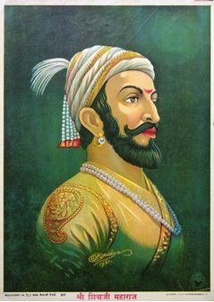

Chhatrapati Shivaji Maharaj
19 February 1630 - 3 April 1680
The Great Lover of Freedom
Shivaji Bhosale I was an Indian warrior-king and a member of the
Bhonsle Maratha clan.
Shivaji carved out an enclave from the declining Adilshahi
sultanate of Bijapur that formed the genesis of the Maratha
Empire.
In 1674, he was formally crowned as the chhatrapati of his realm
at Raigad.

Picture of Shree.Chhatrapati Shivaji Shahaji Bhosale.